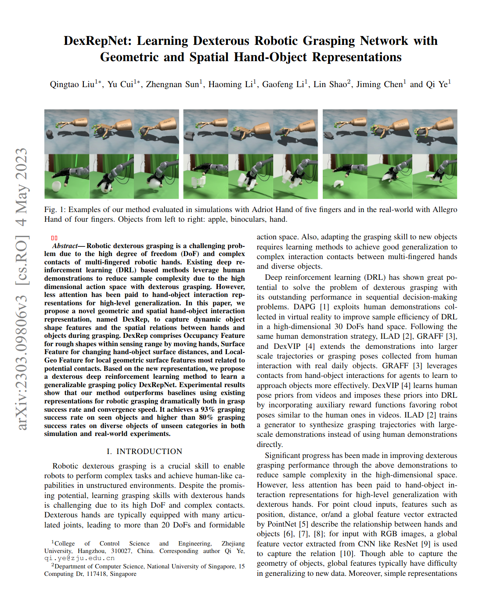

|  |
@article{liu2023dexrepnet, title={DexRepNet: Learning Dexterous Robotic Grasping Network with Geometric and Spatial Hand-Object Representations}, author={Liu, Qingtao and Cui, Yu and Sun, Zhengnan and Li, Haoming and Li, Gaofeng and Shao, Lin and Chen, Jiming and Ye, Qi}, journal={arXiv preprint arXiv:2303.09806}, year={2023} } |
Contact: Qingtao Liu, Qi Ye
Page template borrowed from gkioxari